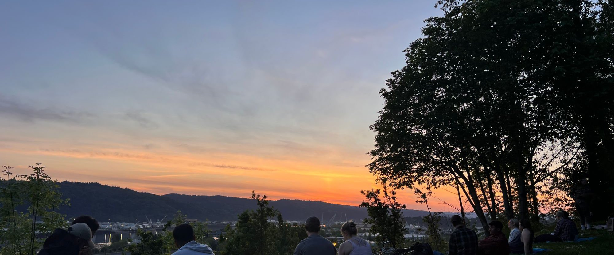

Researcher · Writer · Speaker · Overdose-Prevention Advocate
Turning lived experience into evidence.
From a federal prison cell to the David Geffen School of Medicine. I study the drug supply that nearly killed me — and write about the people the system leaves behind.
About
Scientist and survivor, in equal measure.
Morgan Godvin is a researcher and writer at the UCLA David Geffen School of Medicine, where she is a researcher with Drug Checking Los Angeles — a community program that chemically analyzes the illicit drug supply and turns what it finds into peer-reviewed science, public-health guidance, and policy. Her research appears in JAMA, the International Journal of Drug Policy, and Drug and Alcohol Dependence; her reporting in The Washington Post, Al Jazeera, The Marshall Project, and Filter.
After years of opioid addiction and the overdose death of a close friend, she was prosecuted under a federal drug-induced-homicide statute. After struggling with drug use through her first year in jail, she finally found recovery — not because of her incarceration, but despite it. She was then sent to the nearest women's federal prison, 600 miles away in the Bay Area: FCI Dublin, the institution guards would come to call "the Rape Club," ultimately shuttered amid a nationwide scandal and the arrest of its warden, chaplain, and other correctional officers. Within weeks of her release she enrolled at Portland State University; three years later she graduated summa cum laude.
Since then she has helped write and implement drug policy — from Oregon's Measure 110 to a 2025 study visit with the European Union Drugs Agency in Lisbon — and built a research career measuring the realities of the fentanyl era. She founded Beats Overdose to bring naloxone and overdose prevention into nightlife, music, and hip hop scenes. She writes and speaks because the data and the story are two sides of the same coin: drug policy in the US has left a trail of death and destruction in its wake, and it doesn't have to be this way.
Drug policy in the United States is in dire shape, with more Americans dying annually than the sum total of Americans who died during the Vietnam War. Incarceration and its collateral consequences produce lifelong, even intergenerational hardships. She survived the grief of losing her mother to overdose as well as her own overdoses. With boundless dedication and a dose of naiveté, she has dedicated herself to the cause of reducing drug-related deaths, and much of what she does is in service to the cause.
When she is not doing science, writing, researching, and speaking, she can be found traveling the globe and learning from everyone she meets. She'd like to thank her Centennial Middle and High School Spanish teachers for giving her the first glimpse of a world wider than she once knew.
Opioid & Overdose Research
Making sense of the senseless.
Peer-reviewed research on the illicit drug supply — synthetic opioids, particularly fentanyl — overdose, and the policies meant to address them, including two papers in JAMA and book chapters with Columbia and Rutgers University Press.
Trends in Drug Overdose Deaths Among US Adolescents, 2010–2021
2022 · LA TimesView PDF·DownloadUV stabilizer BTMPS in the illicit fentanyl supply, 9 US locations
2025 · NPR, CNN, WIREDView PDF·DownloadEstimating the Daily Morphine-Milligram Equivalent of Illicit Fentanyl Use in Los Angeles
2026 · The New York TimesView PDF·Download·One Pager- High variation in purity of consumer-level illicit fentanyl samples in Los Angeles, Sept 2023–April 2025 ↗View PDF·DownloadInt J Drug Policy · 2025
- Xylazine prevalence and concentration in the Los Angeles fentanyl market, 2023–2025 ↗View PDF·DownloadDrug Alcohol Depend Rep · 2025
- The Police Opioid Seizure Temporal Risk (POSTeR) model of increased exposure to fatal overdose ↗Int J Drug Policy · 2025
- Policing during a period of drug decriminalization: experiences of people who use drugs in Oregon ↗Int J Drug Policy · 2025
- Motivational interviewing to increase drug checking and reduce overdose: a hybrid type-1 trial protocol ↗View PDF·DownloadBMC Public Health · 2025
- Housing assistance among people who are unstably housed and use drugs in Oregon ↗View PDF·DownloadBMC Public Health · 2025
- Assessing the real-world performance of xylazine test strips for community drug checking in LA ↗View PDF·DownloadHarm Reduct J · accepted
- Criminal legal system engagement among people who use drugs in Oregon after decriminalization ↗Drug Alcohol Depend · 2024
- Fentanyl, heroin & methamphetamine-based counterfeit pills sold at tourist-oriented pharmacies in Mexico ↗View PDF·DownloadDrug Alcohol Depend · 2023
- The introduction of fentanyl on the US–Mexico border: ethnography triangulated with drug-checking data from Tijuana ↗View PDF·DownloadInt J Drug Policy · 2022
- What dose of methamphetamine do regular consumers use daily? Estimating milligrams of oral amphetamine equivalent ↗View PDF·DownloadmedRxiv · preprint
- Purity of consumer-level methamphetamine samples and methamphetamine-adulteration of other drugs: Los Angeles ↗View PDF·DownloadmedRxiv · preprint
- Punishment Over Prevention: U.S. Drug Policy ↗Columbia Univ. Press · 2024
- The Ecology of Prisons and the Effect on Mental Health ↗Rutgers Univ. Press · 2026
- Polysubstance use and lived experience: new insights into what is needed ↗Curr Opin Psychiatry · 2023
- Drug-Induced Homicide Laws and False Beliefs About Drug Distributors ↗View PDF·DownloadSSRN · 2023
Where I Work
Drug Checking Los Angeles
David Geffen School of Medicine at UCLA
We're a UCLA-based community program that chemically analyzes the illicit drug supply, via FTIR and lab testing, providing a life-saving direct service while generating insights into the shifting drug supply.
Our findings have surfaced in JAMA, NPR, All Things Considered, and CNN — including the first U.S. reports of the industrial chemical BTMPS in fentanyl.
visit drugcheckinglosangeles.com ↗Writing
The personal and the political, where they meet.
More than forty essays and op-eds in The Washington Post, The Marshall Project, Al Jazeera, Vice, JSTOR Daily, Filter, and more.
Speaking & Consulting
I speak and consult on drugs, policy, and prisons.
Training on integrating lived experience into research, data-driven storytelling for policy, and AI for researchers — agentic AI for the work, generative for comms and social, ethics for both.
The synthetic opioid supply; medication treatment (MOUD) and methadone at home and abroad; the war on drugs and the carceral system; and drug policy.
The opioid crisis embodied — surviving an overdose, losing someone to one, methadone as a miracle drug — alongside incarceration, recovery, and the road from a prison cell to research.
These engagements are independent of my UCLA role — drug checking itself is a free public service through DCLA, never something I sell.
Listen & Watch
The story, in her own voice.
Dispatches from the front line of overdose prevention — and life after prison. (The full-length audio documentary lives up in About.)
@morgangodvin on TikTok
Overdose prevention, drug policy, and life after prison — short, unflinching, and widely shared.
Press & Media
Selected coverage & appearances.
Morgan's research and story have featured across national press, broadcast, and radio.
- Regular users can tolerate previously 'unsurvivable' amounts of fentanyl ↗The New York Times · 2026
- Treating addiction as a crime doesn't work. What Oregon is doing just might. ↗The New York Times · 2022
- "One of the larger mysteries I've ever seen": industrial chemical found in illicit fentanyl ↗CNN · 2025
- The street supply of fentanyl is dropping. This shift could save thousands. ↗NPR · 2024
- The must-have gear for going out this summer? Narcan! ↗WIRED
- The land beyond the drug war ↗Esquire
- Deadly overdoses have spiked among teens, even as drug use dropped ↗Los Angeles Times · 2022
- Out of prison, TikTok influencers are reshaping how we think about life behind bars ↗NBC News
- The unfair advantages that money provided me in prison ↗NPR Marketplace · 2019
Before this
Founder & Executive Director, Beats Overdose
2021–2025. In partnership with Rhymesayers Entertainment, we provided overdose-prevention services on tour with Atmosphere all across the country — at a time when this kind of public-health intervention was rare at venues. We pushed through countless barriers to partner with dozens of overdose-prevention organizations and bring our services to cities all over the country. Many of those relationships carried on, ushering in a new era of acceptability for overdose-prevention services at concerts and nightlife events. Beats Overdose still exists, but is lying low while I build out my research skills.

Curriculum Vitae
The full record.
Education, positions, the complete publication list, honors, and every talk — updated May 2026. Read it here or take a copy.